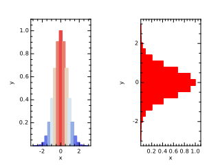

| Type | Visibility | Attributes | Name | Initial | |||
|---|---|---|---|---|---|---|---|
| integer, | public, | parameter | :: | N | = | 21 | |
| real(kind=wp), | public, | dimension(N) | :: | x | |||
| real(kind=wp), | public, | dimension(N) | :: | y |
subroutine doBar
!! 
integer,parameter::N = 21
real(wp),dimension(N)::x,y
x = linspace(-PI,PI,N)
y = exp(-x**2)
call figure()
call subplot(1,2,1)
call xylim(mixval(x)+[-0.1_wp,0.1_wp],mixval(y)+[ 0.0_wp,0.1_wp])
call bar(x,y,c=y,relWidth=1.0_wp)
call ticks()
call labels('x','y','')
call subplot(1,2,2)
call xylim(mixval(y)+[ 0.0_wp,0.1_wp],mixval(x)+[-0.1_wp,0.1_wp])
call barh(x,y,fillColor='r',relWidth=1.0_wp)
call ticks()
call labels('x','y','')
end subroutine doBar